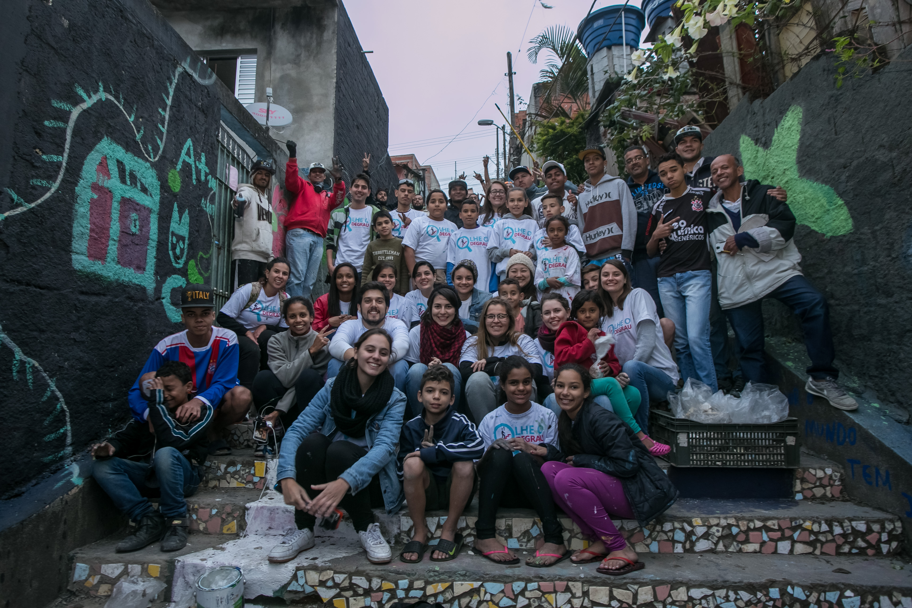

Nos dias 10 e 11 de junho, a escadaria, localizada na rua Miguel Dionísio Valle, no Jardim Nakamura, passou por um processo de requalificação em uma parceria entre Cidade Ativa e GED Inovação, com patrocínio da Bayer. A ação também contou com apoio de outras organizações que se mobilizaram pela causa como Ciclo Social Arte, Escola Estadual Oscar Pereira Machado, Grêmio Transformação Jovem, Família Nakamura, Unidos do Macari, Zoom Urbanismo, Arquitetura e Design e IVM - Instituto Cidade em Movimento. O cinza e o aspecto degradado dos 96 degraus ganharam cores e vida nas mãos dos cerca de 100 voluntários que participaram dos dois dias de atividade.
A convite do IVM (Instituto Cidade em Movimento), a Cidade Ativa integrou o projeto Passagens e fez uma pesquisa sobre as escadas da região do Jardim Ângela. O trabalho apontou diversas falhas nas escadarias do bairro. Segundo Rafaella Basile, coordenadora de projetos e pesquisas da Cidade Ativa, “a falta de acessibilidade, de qualidade mínima e os problemas de drenagem” são os principais problemas dos escadões da região.
Com o apoio e incentivo do diretor da E.E. Oscar Pereira Machado, Claudenir Queiroz, a escadaria foi eleita para passar por um processo participativo de requalificação. Os alunos puderam se envolver em todas as atividades propostas. Segundo ele, o escadão é uma extensão da escola devido à sua localização em frente à instituição de ensino. Claudenir também acredita que sua “missão é construir um aluno que seja protagonista da sua própria história e que tenha orgulho da região onde ele reside”.
Na sexta-feira, voluntários dividiram-se em três grupos para executar as diferentes atividades da reforma. A marcenaria, liderada pela equipe da Zoom Urbanismo Arquitetura e Design, foi responsável pela confecção do mobiliário urbano. Três bancos e um escorregador foram instalados. Os integrantes da oficina de mosaico colocaram a mão na argamassa e limparam, quebraram e posicionaram os azulejos nos espelhos dos degraus. Os grafiteiros do coletivo Ciclo Social Arte contaram com a ajuda dos alunos voluntários para pintar os muros laterais da escadaria e trouxeram colegas de profissão para ajudar a colorir os muros laterais.
No sábado, os grafiteiros tomaram conta das paredes com suas obras de arte e os participantes da oficina de mosaico trabalharam com afinco para concluir sua missão, com êxito. Durante todo o dia todo, o clima foi de festa e de muita colaboração. As crianças e os voluntários subiam sem medo os degraus e em pouco tempo o frio de cerca de 12 graus já havia sido esquecido.
Para Enzo, de 10 anos, e Kauan, de 8, as mudanças na escada e a participação no processo são entusiasmantes. As crianças descreveram o local como um ponto de consumo de drogas, mas acreditam no potencial transformador da reforma.
Não foi só a escadaria que passou por um processo de renovação, mas os estudantes também puderam vivenciar uma experiência inovadora. Para Ramiro Levy, da Cidade Ativa, o impacto social e educacional desse tipo de intervenção é fundamental e constitui um dos principais objetivosdesse projeto. Michel Onguer, um dos fundadores da Ciclo Social Arte, vê a ação como uma maneira “de despertar um novo olhar nas crianças para que elas passem a entender o bairro”.
Saiba mais sobre o projeto: Mapeamento colaborativo de escadarias